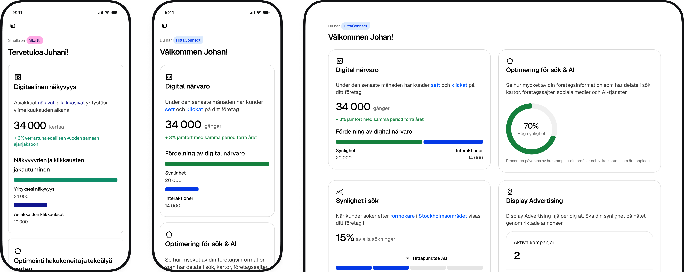
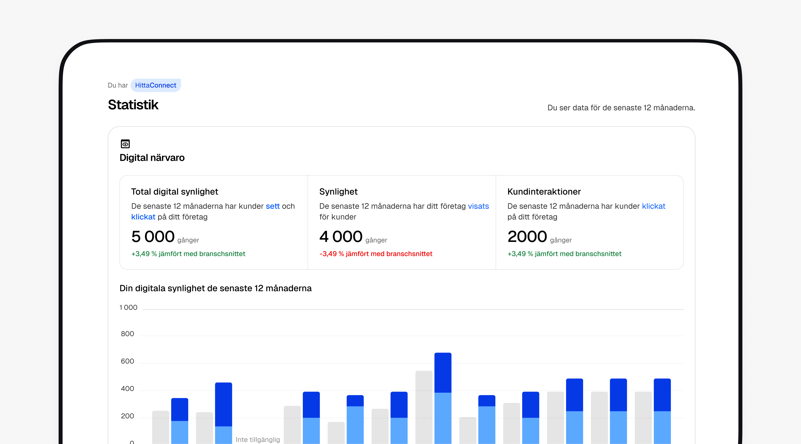
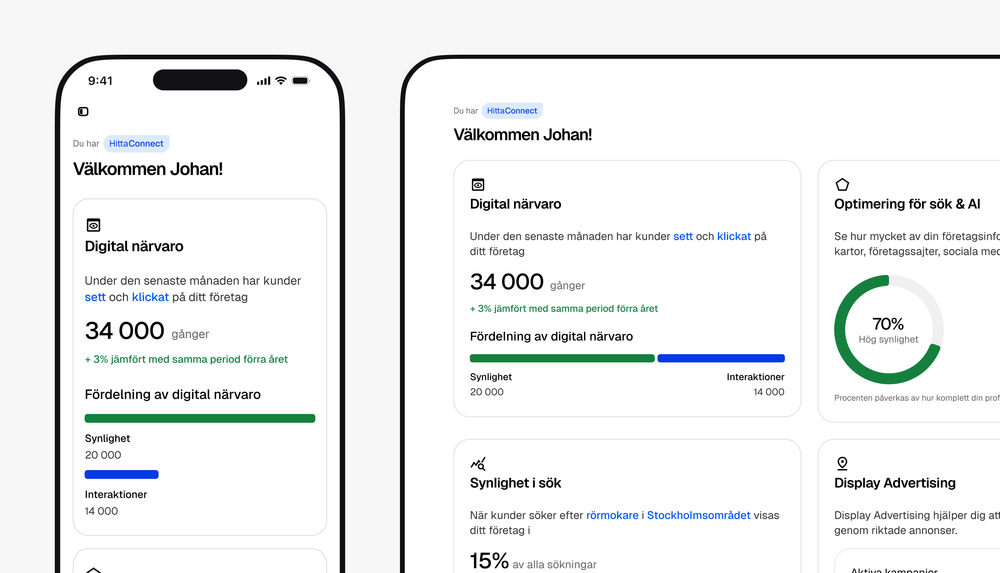
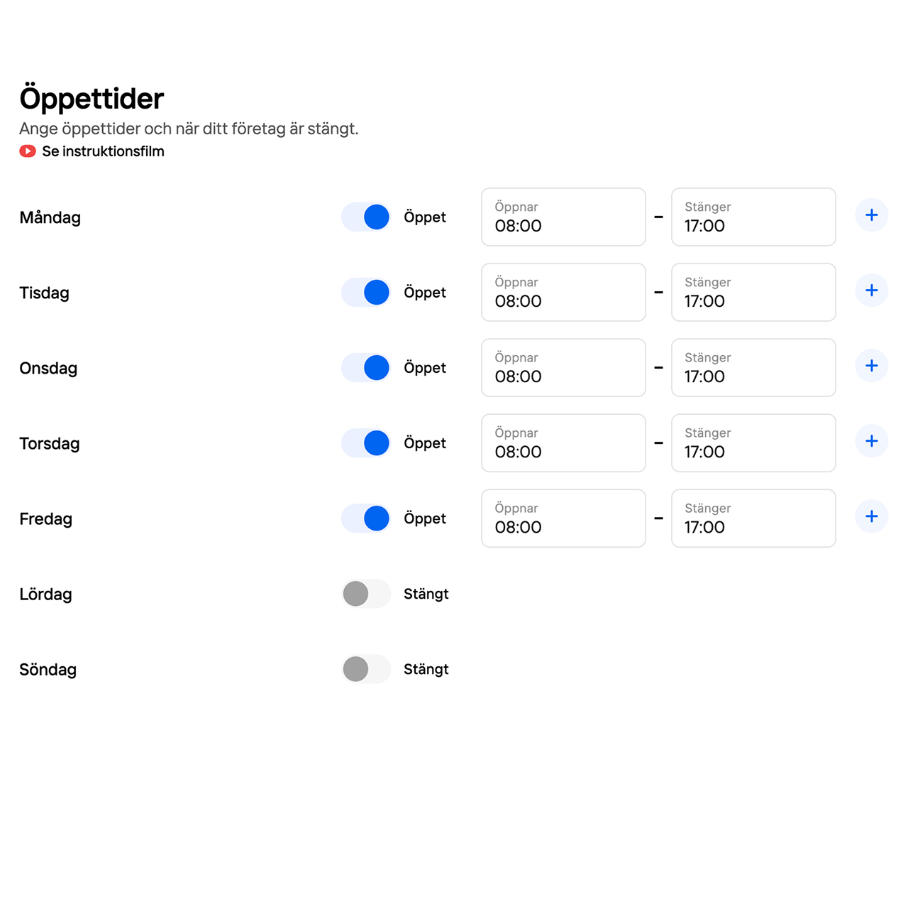
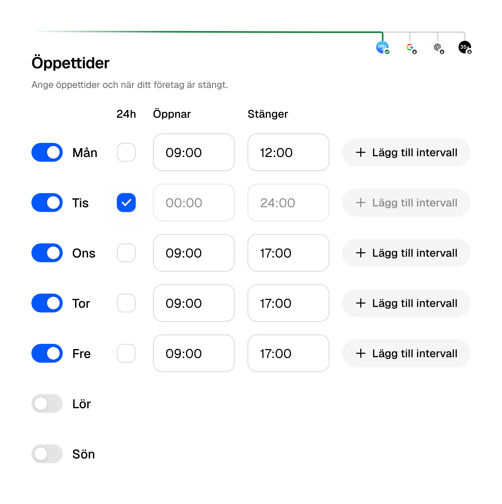
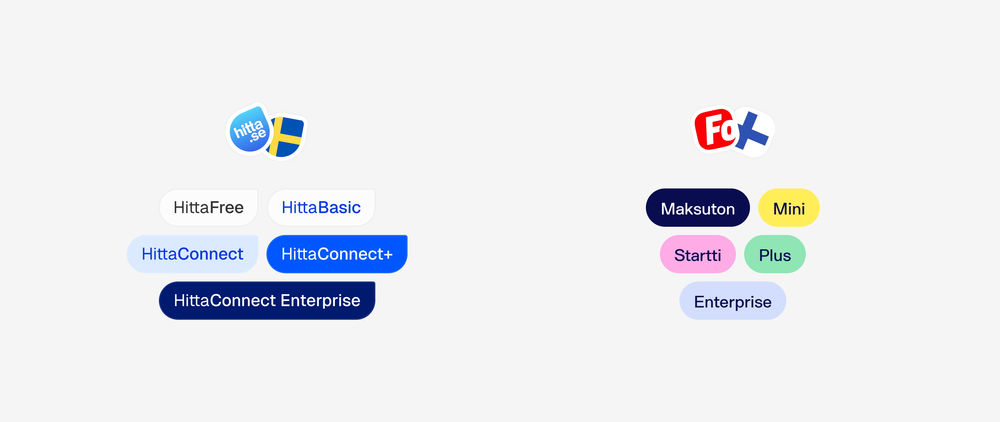
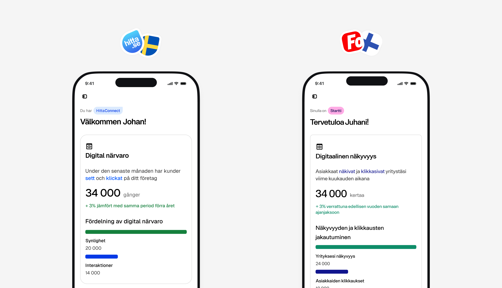
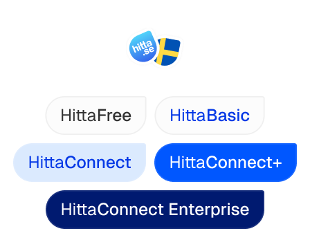
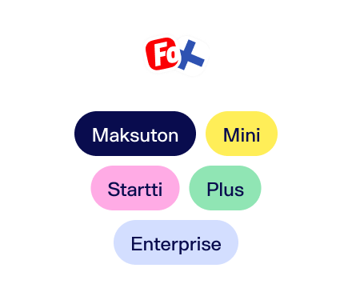

One Unified Design for Two Brands and Languages
Hitta.se and Fonecta are Sweden's and Finland's respective leading people and business directory. As interim design lead during Hitta.se and Fonecta's merger, I shaped the product design for their B2B suite of tools that help business owners manage their online business listing and social media in one place.

Problem Description
Business owners in both markets struggled to keep their accounts active, and couldn’t see if it paid off.
“Can you see whether there were any searches on my hitta.se? Do you have any statistics or anything? Anyone who found their way through you, to me?”
After Fonecta acquired Hitta.se, both products shared this problem, so one shared design could improve both at once, across two brands and two languages.
Hitta.se
Sweden's leading business directory, helping SMBs manage their online presence and get found by local customers.
Fonecta
Finland's leading digital media and directory company. Acquired Hitta.se to expand into the Swedish market.
Design
From Managing Information to Seeing Results
Owners could edit their information, but not see how it performed. The new statistics page answers their question: how often they were seen, how customers interacted, and how that compares with the industry.


Modernizing the Visual Language
Wherever the new feature touched an existing screen, that screen was improved too: clearer type, more breathing room and lighter surfaces.
Before

After

See where your info shows up
Beyond a UI facelift, the new editor shows where the business information is shared: on Hitta, Google, ChatGPT and 35+ other platforms.
1 Design, 1 Product, 2 Brands
Both products share one core UX and one design system, with each brand as a theme. Local brands stay familiar, and every improvement ships to both markets at once.

Different tiers, one component
Hitta.se and Fonecta each have their own subscription tiers, with different names and colours. The tier badge is one shared component that adapts to each brand's lineup.

Same meaning, longer words
Sharing one design comes with challenges, like language differences. Finnish tends to run longer than Swedish for the same sentence, so every component had to stretch without breaking the layout.

Design once, ship twice
A robust shared design system meant each screen was designed one time. Adapting it for the other market took minimal work: brand colours, tier names and copy changed, the layout stayed the same.

Afterthoughts
Bringing two products, two brands and two languages into one design taught me where to share and where to adapt:
Unify the core, localise the surface. Business owners in Sweden and Finland kept the brand they already knew, while the experience underneath became one product.
Design for the longest language. Finnish often needs more room than Swedish to say the same thing, so components had to handle the longer copy from the start instead of being patched for one market later.
A robust design system is what makes “design once” real.
Special thanks to Dalite Bagner Jensmar (Digital Designer), Emilia Niklasson (Project Manager), and the Hitta.se and Fonecta teams for your work and collaboration on this project.